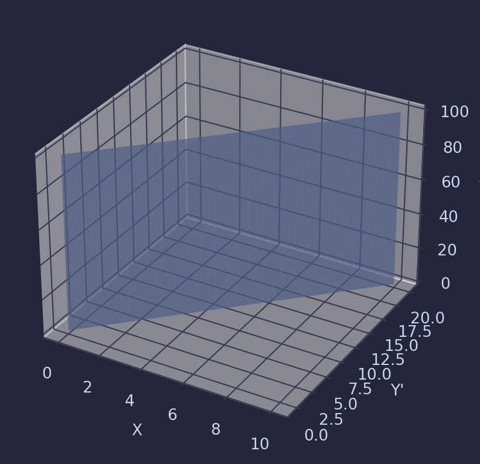
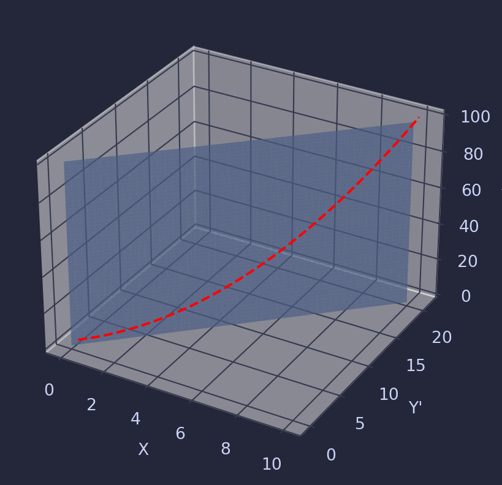
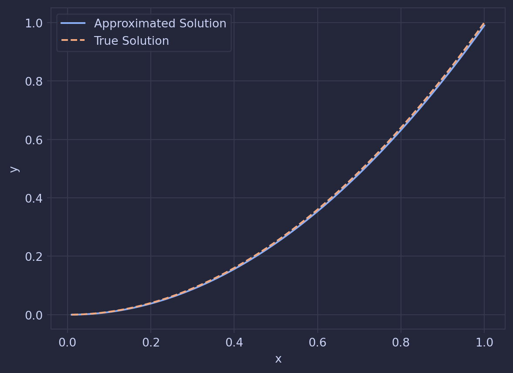

After writing out the last post where I wrote out a python library for using an improved version of Euler’s method to solve ODEs. But so far, we haven’t been solving ODES, instead we have just been taking an initial value and iterating it over the length of a domain. To To make the ODE estimator work, we need to ensure that the conditions of the ODE are met at each step.
Simplifying ODEs: Constant-Linear ODEs
ODEs are often categorized as linear or non-linear. Linear ODEs take the form \(a_0(x)y + a_1(x)y' + ... + a_n(x)y^{n} = b(x)\), with both \(a\) and \(b\) representing functions of \(x\), while Non-linear equations are all the others. In our solver’s context, we’ll concentrate on a subset I’ve termed “constant-linear” ODEs, characterized by constant coefficients for \(y\) terms and a linear function of \(x\) for \(b\). Specifically, a constant-linear ODE looks like \(a_0y + a_1y' + ... + a_ny^{n} = bx + c\).
This may seem like a very restrictive requirement, but there are many famous examples of this kind of equation including:
Pivoting for a moment, I want to take a quick moment to reframe how we are imagining ODEs. Most of the time, we see ODEs as curves in space and/or time, but I want to reframe them as planes in a vector space.
Each point in this vector space describes the state of a point along a curve, such that a values of the vector give:
This means that an ODE can be defined by a plane that contains all the points which meet the requirements of the ODE.
For example, for the equation \(y' = 2x\) this plane looks like:
import matplotlib.pyplot as pltimport numpy as npimport mplcatppuccinimport matplotlib as mplimport matplotlib.pyplot as pltfrom mpl_toolkits.mplot3d import Axes3Dmpl.style.use("macchiato")# Create a grid of values for x and yx = np.linspace(0, 10, 100)y = np.linspace(0, 100, 100)x, y = np.meshgrid(x, y)# Calculate corresponding zz = (2*x)# Create a figure and a 3D axisfig = plt.figure()ax = fig.add_subplot(111, projection='3d')ax.plot_surface(x, z,y, alpha =0.7)# Set labelsax.set_xlabel('X')ax.set_zlabel('Y')ax.set_ylabel("Y'")# Show the plotplt.show()
/tmp/ipykernel_31944/3200397363.py:3: DeprecationWarning: The catppuccin-matplotlib package is deprecated, please upgrade to https://github.com/catppuccin/python (pip install catppuccin)
import mplcatppuccin

Then a specific solution to the ODE exists as a curve that sits on this plane. For example, for the IVP that starts at (0,0), the solution follows this curve:
Lx = np.linspace(0, 10, 100)Ly = np.array([x**2for x in Lx])# Create masks for the conditionsmask = (Lx <=10) & (Lx >=0) & (Ly <=100) & (Ly >=0)# Now apply the mask to both arrays to exclude unwanted valuesfiltered_Lx = Lx[mask]filtered_Ly = Ly[mask]Lz = (2*filtered_Lx) +1# Create a new figurefig = plt.figure()ax = fig.add_subplot(111, projection='3d',computed_zorder=False)# Plot surface and lineax.plot_surface(x, z,y, zorder=0,alpha =0.7)ax.plot(filtered_Lx, Lz, filtered_Ly, color='r',linestyle='dashed' , zorder=1)# Set labelsax.set_xlabel('X')ax.set_zlabel('Y')ax.set_ylabel("Y'")# Show the plotplt.show()

But Why Does This Matter
The reason that we want to reframe ODEs in this way is because of the following fact:
For all constant-linear ODEs, we can express the ODE as a matrix such that applying it to any point in the vector space would map any point to a valid point on the curve defined by the ODE
Looking at the equations above, these matrices (\(T\)) are:
Now that we can express the ODEs in the form of a matrix, we can implement these matriexies in the ODE solver package to make the solution fit the ode. It’s important here to note that I’ve diverted from my old definitions of \(Y\) here, where the first element of the vector is \(y(x)\).
To make a step in the approximation we use the following equation:
When making this step, the error in the approximation will move the point away from the plane that contains all valid solutions to the ODE, and therefore we will have to snap it back using one of the transformation matrices (\(T\)).
Implementing this method in our python library:
def expanded_euler(dims, h): step_matrix = np.zeros((dims, dims))for i inrange(dims):for j inrange(i, dims):# Is 1, and h at j-i =0, 1 respectively step_matrix[i, j] = h ** (j - i) / math.factorial(j - i) expanded_matrix = add_x_and_1(step_matrix, h)return expanded_matrixdef add_x_and_1(original_matrix, h): new_size =len(original_matrix) +2 new_matrix = np.zeros((new_size, new_size), dtype=original_matrix.dtype)# Set the 2x2 top left matrix new_matrix[0:2, 0:2] = [[1, 0], [h, 1]]# Copy the original matrix to the bottom right of the new matrix. new_matrix[2:, 2:] = original_matrixreturn new_matrixdef linear(y, step_matrix_generator, transformation_matrix, steps=10, h=0.1): dims =len(y) -2 step_matrix = transformation_matrix @ step_matrix_generator(dims, h) output_list = [] y_n = y.copy() i =0while i < steps: y_n = step_matrix @ y_n output_list.append(y_n) i +=1
Bind this machinery together, and you get a tool capable of tackling the initial example of \(y' = 2x\) passing through the point (0,0):
import numpy as npimport mathclass Solution:def__init__(self, input_list: list): solution_list =sorted(input_list, key=lambda x: x[1]) dims =len(solution_list[0]) -2self.x = np.array([x[1] for x in input_list]) value_lists = [[] for _ inrange(dims)]for v in input_list:for i inrange(dims): value_lists[i].append(v[i +2])for i inrange(dims):self.__dict__[f"y_{i}"] = np.array(value_lists[i])def interpolate(self, x, y_n):""" allows you to get any value from the solution by interpolating the points """ y_values =self.__dict__[f"y_{y_n}"] x_max_index = np.where(self.x >= x)[0][0] x_min_index = np.where(self.x <= x)[0][-1] x_at_x_max =self.x[x_max_index] x_at_x_min =self.x[x_min_index] y_at_x_max = y_values[x_max_index] y_at_x_min = y_values[x_min_index] slope = (y_at_x_max - y_at_x_min) / (x_at_x_max - x_at_x_min) value = y_at_x_min + slope * (x - x_at_x_min)return valuedef linear(y, step_matrix_generator, transformation_matrix, steps=10, h=0.1): dims =len(y) -2 step_matrix = transformation_matrix @ step_matrix_generator(dims, h) output_list = [] y_n = y.copy() i =0while i < steps: y_n = step_matrix @ y_n output_list.append(y_n) i +=1return Solution(output_list)
plt.plot(solution.x, solution.y_0, label='Approximated Solution')plt.plot(solution.x, solution.x**2, label='True Solution', linestyle='--')plt.xlabel('x') # Label for the x-axisplt.ylabel('y') # Label for the y-axisplt.grid(True) # Show a grid for better readabilityplt.legend()plt.show()

What’s Next?
This method seems to work pretty well and follows the true solution pretty closely. I’m going to stop here for now but there are many things on my wishlist that I want to build in later posts. This includes:
Solving IVPs which aren’t constant-linear
Solving BVPs
Applying this method to PDEs
Stay tuned for more posts in this series where I try to implement these features into my solver!